In this homework I built a physically based path tracer. It starts by shooting rays from the camera through each pixel and finding what they hit (spheres and triangles). To make that fast on meshes with hundreds of thousands of triangles, I added a bounding volume hierarchy (BVH). Then I added lighting in steps: first direct light only (with two different ways of sampling it), then global illumination where light bounces around the scene several times, using Russian roulette to stop paths at random. Last, I added adaptive sampling so pixels that settle quickly stop early and the hard pixels get more samples.
The thing that stuck with me most is how much of a "real" looking image comes from indirect light. Direct lighting alone gives black ceilings and pitch-black shadows. Once light bounces, the ceiling lights up, shadows get soft, and the red and blue walls bleed color onto the white objects. I also learned how much the way you sample matters: the same number of samples can give a clean image or a very noisy one depending on where you aim them.
For each pixel, the renderer takes ns_aa random sample points inside that pixel. Each point is the pixel's bottom-left corner plus a random offset in \([0,1]^2\). I divide by the image width and height so the point is in normalized image space \([0,1]^2\), and pass it to the camera.
The camera turns that point into a ray. In camera space, the camera sits at the origin looking down \(-z\), and there is a virtual sensor on the plane \(z = -1\). The sensor's half-width is \(\tan(\text{hFov}/2)\) and its half-height is \(\tan(\text{vFov}/2)\) (after converting the angles from degrees to radians). So the point \((x, y)\) maps to
\[ \left( (2x - 1)\tan\tfrac{\text{hFov}}{2},\ (2y - 1)\tan\tfrac{\text{vFov}}{2},\ -1 \right). \]
The ray direction goes from the origin to that point. I rotate it into world space with the camera-to-world matrix, normalize it, and use the camera's position as the ray origin. The ray's min_t and max_t are set to the near and far clipping planes, so anything outside that range is ignored.
The ray then goes to the scene's intersection test. Each primitive checks if the ray hits it at some \(t\) inside \([\text{min_t}, \text{max_t}]\). When it does, it saves the hit info (the \(t\) value, surface normal, the primitive, and its material) and shrinks the ray's max_t down to that \(t\). Because of that, any later primitive that is farther away fails the range check, so after testing everything we are left with the closest hit. The radiance for the ray is computed from that hit, and the pixel's final color is the average of all its samples.
For spheres, I plug the ray \(o + td\) into the sphere equation \(|p - c|^2 = R^2\). That gives a quadratic \(at^2 + bt + c = 0\). If the discriminant is negative, the ray misses. Otherwise there are two roots, and I take the smaller one if it is in the valid range, or else the larger one (this handles rays that start inside the sphere). The normal is the vector from the center to the hit point, normalized.
I used the Möller–Trumbore algorithm. The idea is that a point on the triangle can be written with barycentric coordinates as \((1 - b_1 - b_2)P_1 + b_1 P_2 + b_2 P_3\). Setting that equal to the ray \(O + tD\) gives three equations (one per axis) with three unknowns: \(t\), \(b_1\), \(b_2\). Möller–Trumbore solves this system directly with a few cross and dot products (it's basically Cramer's rule):
\[ E_1 = P_2 - P_1,\quad E_2 = P_3 - P_1,\quad S = O - P_1,\quad S_1 = D \times E_2,\quad S_2 = S \times E_1 \]
\[ \begin{bmatrix} t \\ b_1 \\ b_2 \end{bmatrix} = \frac{1}{S_1 \cdot E_1} \begin{bmatrix} S_2 \cdot E_2 \\ S_1 \cdot S \\ S_2 \cdot D \end{bmatrix} \]
If \(S_1 \cdot E_1\) is almost zero, the ray is parallel to the triangle, so there is no hit. Otherwise, the hit only counts if it is inside the triangle (\(b_1 \ge 0\), \(b_2 \ge 0\), \(b_1 + b_2 \le 1\)) and \(t\) is between min_t and max_t. On a hit, I set max_t to \(t\) and fill in the intersection. The normal is not just the flat face normal: I blend the three vertex normals using the same barycentric weights, which makes meshes look smooth.
|
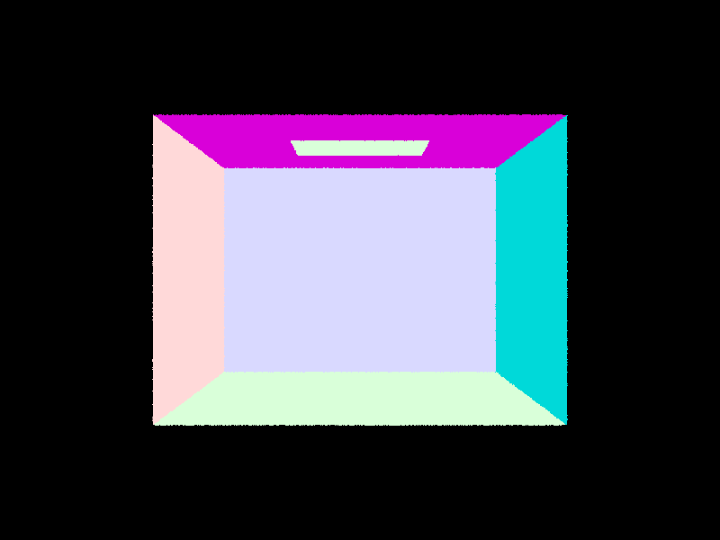 |
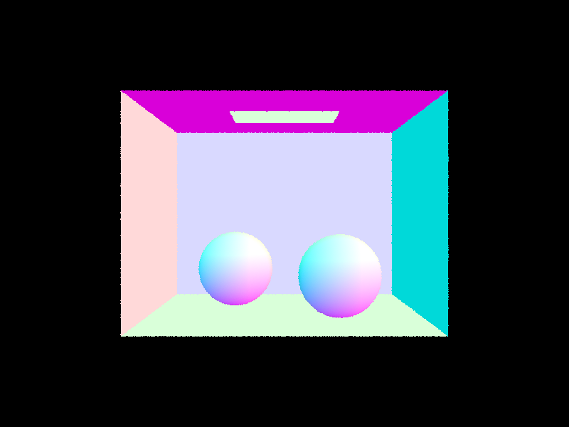 |
|
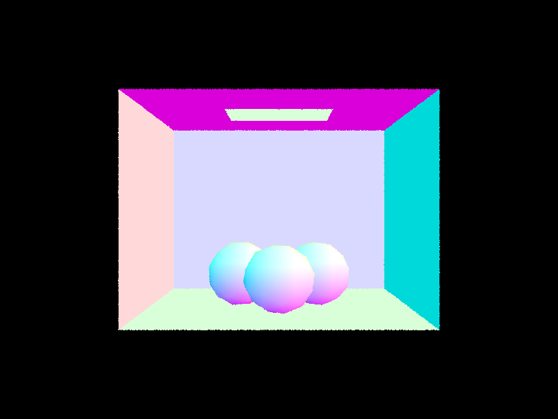 |
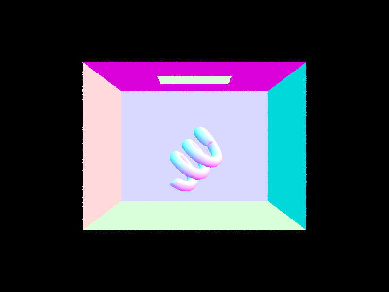 |
The BVH is built recursively over a range of primitives:
max_leaf_size primitives, make a leaf node that points to this range and stop.I chose the average centroid because it's cheap and it follows where the geometry actually is. A midpoint split of the bounding box can put almost everything on one side when the mesh is dense in one corner, but the average moves toward where most primitives are. Using the centroid box (not the full bounding box) to choose the axis also helps when there are a few large triangles that stretch the box but don't say much about how the primitives are spread.
There is one edge case: if every centroid lands on the same side (for example, all centroids are at the same spot), the split doesn't make progress and the recursion would never end. In that case I fall back to splitting at the median primitive along that axis, which always gives two non-empty halves.
For traversal, I first test the ray against the node's box using the slab method: for each axis, find the \(t\) values where the ray enters and leaves the pair of planes, and intersect those three intervals together. If that interval doesn't overlap \([\text{min_t}, \text{max_t}]\), the whole subtree is skipped. At a leaf I test every primitive. For has_intersection I return as soon as anything is hit, but for intersect I have to check both children, since the closer hit might be in either one.
|
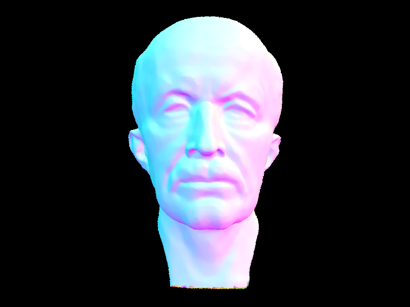 |
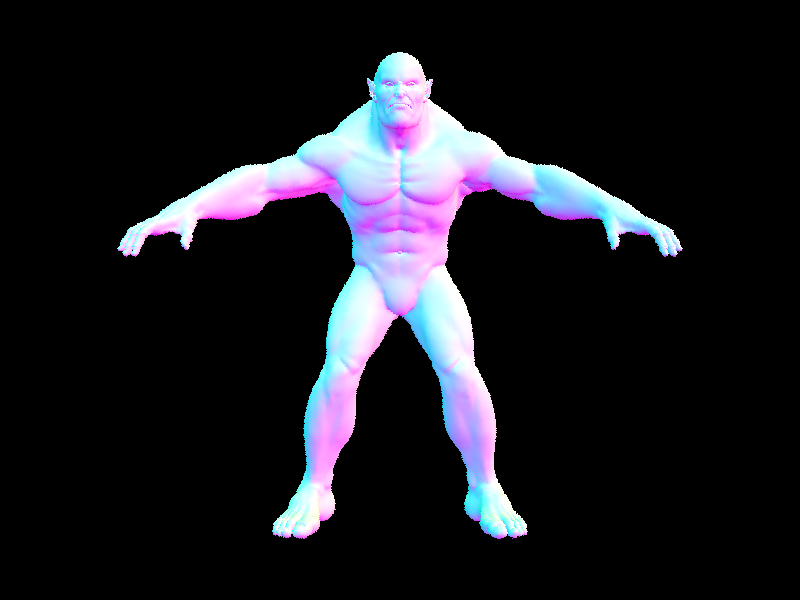 |
|
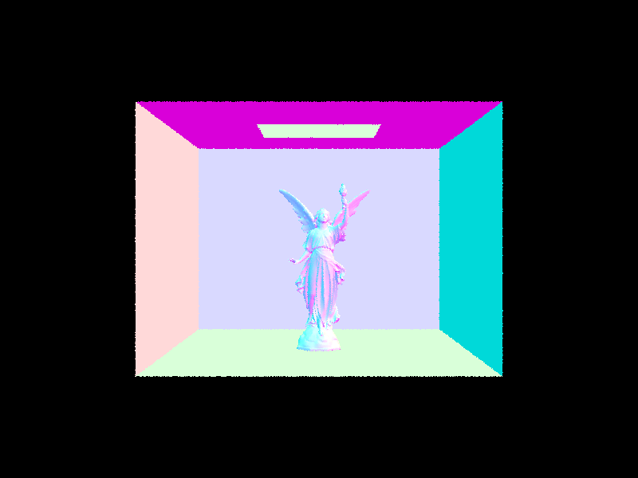 |
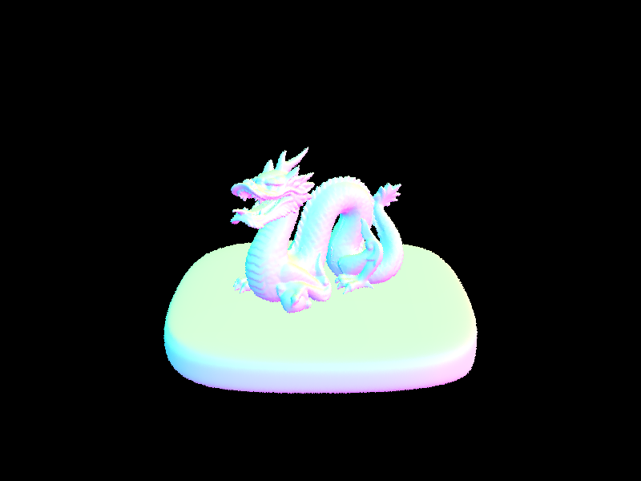 |
All renders are 800x600, 1 sample per pixel, normal shading, 10 threads. The times include loading the scene and building the BVH.
| Scene | Triangles | Without BVH | With BVH | Speedup |
|---|---|---|---|---|
| teapot.dae | 2,464 | 1.74 s | 0.05 s | ~35x |
| cow.dae | 5,856 | 3.93 s | 0.06 s | ~65x |
| beetle.dae | 7,558 | 5.28 s | 0.06 s | ~90x |
| CBbunny.dae | 28,588 | 28.56 s | 0.12 s | ~240x |
| maxplanck.dae | 50,801 | 41.77 s | 0.18 s | ~230x |
Without the BVH, every ray has to be tested against every triangle in the scene, so the render time grows about linearly with the number of triangles. Going from the teapot (about 2,500 triangles) to maxplanck (about 50,000) made the render around 24 times slower. With the BVH, all of these scenes render in a fraction of a second, and the time barely changes as the triangle count goes up. That's because each ray only goes down the branches whose boxes it actually hits, which is roughly logarithmic in the number of primitives, and the renderer reported only about 2 to 7 intersection tests per ray on average. The speedup gets bigger as the scenes get bigger: about 35x for the teapot and over 200x for the bunny and maxplanck. Scenes like CBlucy (about 134,000 triangles) take under half a second with the BVH, but going by the trend above, would take around two minutes without it.
At each hit point, I build a local coordinate frame where the surface normal is the \(z\) axis. Then I pick random directions uniformly over the hemisphere above the surface. For each direction, I shoot a new ray from the hit point (starting a tiny bit away, at EPS_F, so it doesn't hit the same surface again). If that ray hits something that emits light, I add its contribution. Each sample is weighted using the Monte Carlo estimator:
\[ L_{\text{out}} \approx \frac{1}{N} \sum_{j=1}^{N} \frac{f(w_j \to w_o)\, L_i(w_j)\, \cos\theta_j}{p(w_j)}, \qquad p(w_j) = \frac{1}{2\pi} \]
Here \(f\) is the BSDF (for a diffuse surface it's just \(\text{albedo}/\pi\)), and \(\cos\theta_j\) is the \(z\) component of the sampled direction in the local frame. The number of samples is the number of lights times ns_area_light, so it uses the same total as light sampling.
Instead of shooting rays in random directions and hoping they hit a light, this version samples the lights directly. For each light in the scene, I ask it for a sample: a direction toward a point on the light, the distance to it, the light's radiance, and the pdf of picking that sample. A point light gives the same sample every time, so I only take one sample from it. An area light gets ns_area_light samples.
For each sample, I skip it if the light is behind the surface (the direction has \(z \le 0\) in the local frame). Otherwise I cast a shadow ray toward the light, with max_t set to just before the light. If the shadow ray hits anything, the point is in shadow for that sample. If not, I add \(f \cdot L \cdot \cos\theta / \text{pdf}\). I average the samples for each light and then add up all the lights.
Both rows use 64 samples per pixel, 32 light rays, and only direct light (-m 1).
| Uniform hemisphere sampling | Light sampling |
|
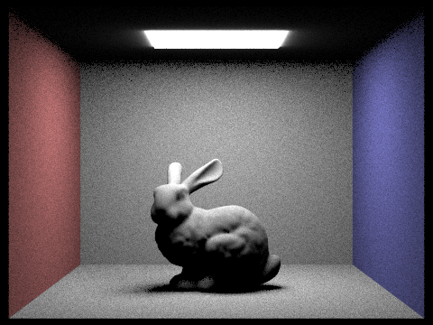 |
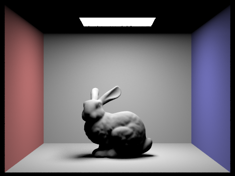 |
|
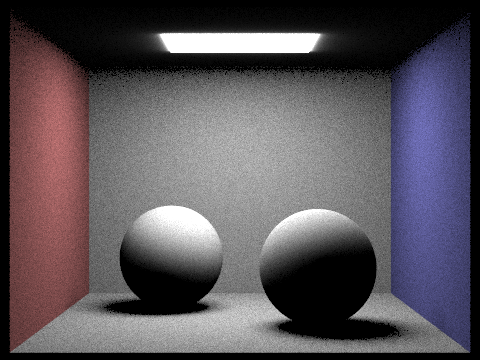 |
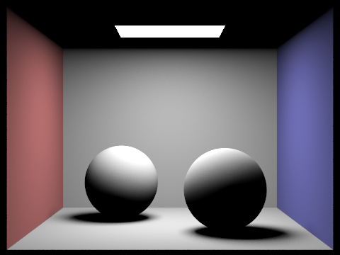 |
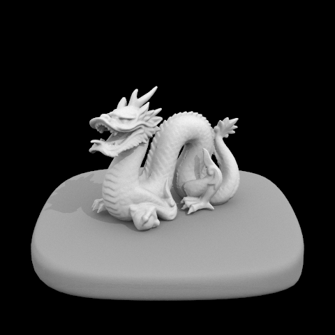
These are CBbunny.dae with light sampling, 1 sample per pixel (-s 1), and direct light only.
-l 1) |
-l 4) |
-l 16) |
-l 64) |
With 1 light ray, each point either sees the light or doesn't, so the shadow under the bunny is a mess of black and white dots and has no real soft edge. With 4 rays the shadow shape becomes clear, but it's still grainy. At 16 rays the penumbra (the soft edge where only part of the light is blocked) starts to look like a smooth gradient. At 64 rays the shadow is smooth and the noise on the walls and floor is mostly gone. More light rays means each point gets a better estimate of how much of the area light it can see, which is exactly what a soft shadow is.
With the same number of samples, light sampling looks cleaner. In the hemisphere images, the walls and floor are grainy and the shadows under the objects have speckles, while the light sampling images are smooth. The reason is that the light is small compared to the whole hemisphere, so most random directions miss it and contribute nothing, while a few happen to hit it and contribute a lot. That gives high variance. Light sampling only picks directions that point at the light, so almost every sample is useful, and the only randomness left is whether that point on the light is blocked. Light sampling was also faster here (11.6 s vs. 29.5 s for the bunny, 6.0 s vs. 21.9 s for the spheres), since its shadow rays can stop at the first thing they hit, while a hemisphere ray has to find the closest hit to know what it's looking at. Hemisphere sampling also can't handle point lights at all, since a random direction will basically never hit a single point, which is why the dragon scene only works with light sampling. Both methods converge to the same brightness, though: the overall image looks the same, just with different amounts of noise.
Each camera ray starts with a depth equal to max_ray_depth, which is the number of bounces it's allowed. The main function is recursive. At a hit point it does the following:
EPS_F), with depth one less than before.The zero-bounce light (light that goes straight from a light source into the camera) is added once at the camera ray's first hit. Inside the recursion I only add direct lighting, not the emission of whatever the bounce ray hits. Otherwise that light would be counted twice: once by the light sampling and once by the bounce.
When isAccumBounces is false, only the light from exactly the \(m\)-th bounce is kept. The recursion still runs the same way, but it only adds the direct lighting at the last level (and zero-bounce light only when \(m = 0\)).
To keep long paths from being too expensive, I use Russian roulette. After the first indirect bounce, each path keeps going with probability 0.65 (so it stops with probability 0.35). When it keeps going, I divide its contribution by 0.65 so the average stays correct (unbiased). The first indirect bounce always happens, so we always get at least some indirect light when max_ray_depth is more than 1. The path also always stops when its depth reaches the limit.
1024 samples per pixel, 4 light rays, max ray depth 5.
|
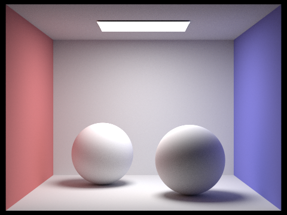 |
|
CBspheres_lambertian.dae, 1024 samples per pixel, 4 light rays.
|
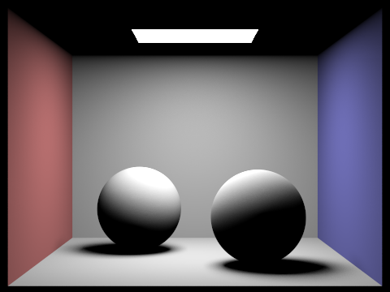 |
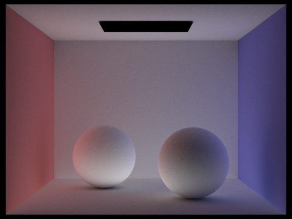 |
The direct-only image has a black ceiling, since no light from the area light reaches it directly, and the shadows under the spheres are completely black. The tops of the spheres are bright and the bottoms are dark. The indirect-only image is almost the opposite. The light source itself is black (it's not light that bounced), the ceiling is now lit, and the bottoms of the spheres pick up light reflected from the floor. You can also see the color bleeding: the left sphere has a red tint and the right one has a blue tint from the nearby walls. Adding the two together gives the full global illumination image.
isAccumBounces=false)1024 samples per pixel, 4 light rays. Each image shows only the light from the \(m\)-th bounce.
|
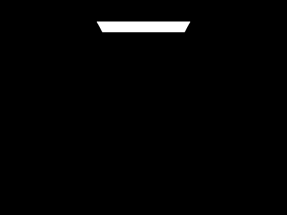 -m 0 |
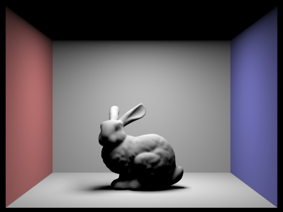 -m 1 |
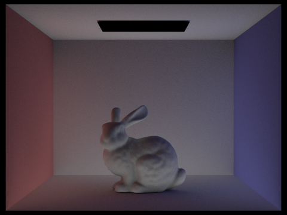 -m 2 |
|
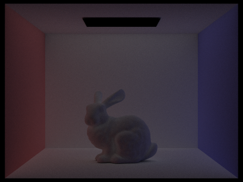 -m 3 |
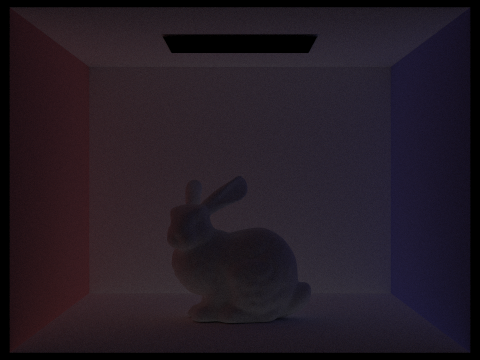 -m 4 |
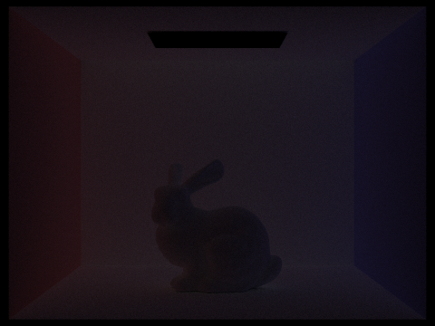 -m 5 |
Bounce 0 is just the light source. Bounce 1 is direct lighting: the floor and walls are lit, but the ceiling is black and the shadow under the bunny is black. The 2nd bounce is the light that reflected off one surface before reaching the point we see. It lights up the ceiling and the underside of the bunny, and the walls clearly reflect their color onto nearby surfaces (red on the left side of the bunny and floor, blue on the right). The 3rd bounce is darker and smoother. It fills in corners and the shadow area even more, and its colors are more mixed. Each later bounce gets dimmer because some light is absorbed at every surface.
A rasterizer usually only does the first bounce: it shades each point based on the lights, maybe with a constant "ambient" term to fake the rest. That's why rasterized images often have flat, black shadows and no color bleeding. The 2nd and 3rd bounces are what make the image look real: soft light in the shadows, a lit ceiling, and colors from one surface showing up on another.
1024 samples per pixel, 4 light rays. The top row is from the section above (only the \(m\)-th bounce). The bottom row adds up all bounces from 0 to \(m\).
-m 0 |
-m 1 |
-m 2 |
-m 3 |
-m 4 |
-m 5 |
|
| Only bounce \(m\) | ||||||
| Bounces 0 to \(m\) | 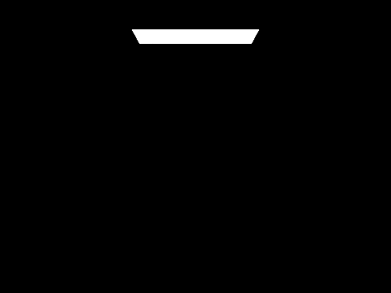 |
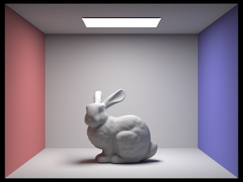 |
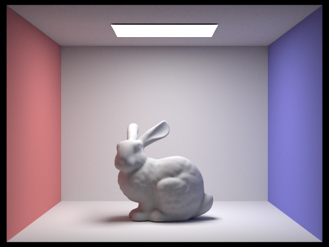 |
For \(m = 0\) and \(m = 1\) the two rows are almost the same, since there's nothing earlier to add except the light source itself. From \(m = 2\) on, the unaccumulated images get darker each time, while the accumulated images get brighter. The biggest jump is from \(m = 1\) to \(m = 2\), where the ceiling and shadows get filled in. After \(m = 3\) the accumulated images barely change, because each extra bounce adds less and less light.
1024 samples per pixel, 4 light rays, all bounces accumulated, Russian roulette on (continue probability 0.65 after the first indirect bounce).
-m 0 |
-m 1 |
-m 2 |
-m 3 |
-m 4 |
-m 100 |
Russian roulette is always on in my implementation, so the images for \(m = 0\) to \(4\) are the same accumulated renders as above. The interesting one is \(m = 100\). It looks almost the same as \(m = 5\), just very slightly brighter in the corners and shadows, because bounces past 5 carry very little light. What Russian roulette buys here is speed: without it, every path would have to go all 100 bounces. With a 0.35 chance of stopping at each bounce after the first indirect one, most paths end after only a few bounces. The \(m = 100\) render took 185 seconds, compared to 129 seconds for \(m = 5\), so allowing 20 times more bounces only made it about 40% slower, and the result is still unbiased.
CBspheres_lambertian.dae, 4 light rays, max ray depth 5.
|
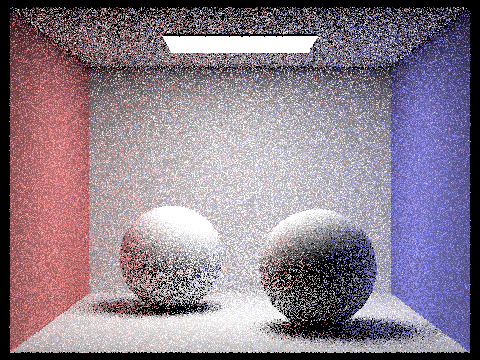 |
|
|
|
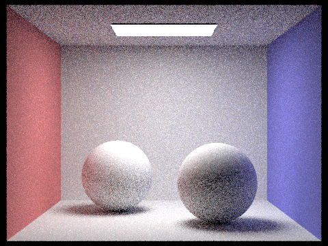 |
|
|
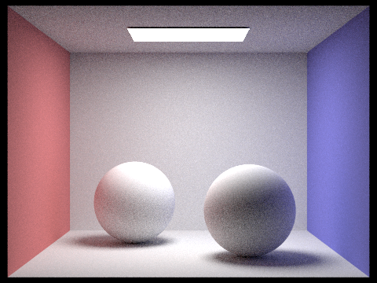 |
|
|
|
At 1 sample per pixel the image is very noisy, especially on the ceiling and in the shadows, where all the light comes from random bounces. The edges of the spheres are also jagged since there's only one sample per pixel. Every time the sample count goes up 4 times, the noise drops by about half (noise goes down like \(1/\sqrt{n}\)). By 64 samples the image is clearly readable but still a bit grainy in the darker areas. At 1024 samples it's smooth everywhere, with soft shadows and clean color bleeding.
Some pixels settle to their final color after only a few samples (like a flat, directly lit wall), while others stay noisy for a long time (like shadows or the ceiling, which depend on random bounces). Adaptive sampling uses this: instead of giving every pixel the same number of samples, each pixel keeps sampling only until it's "good enough," and then stops. That way the time goes into the pixels that actually need it.
For each pixel, I keep two running sums of the samples' illuminance \(x_k\) (a single brightness number from the RGB color):
\[ s_1 = \sum_k x_k, \qquad s_2 = \sum_k x_k^2 \]
From these I can get the mean and variance after \(n\) samples without storing every sample:
\[ \mu = \frac{s_1}{n}, \qquad \sigma^2 = \frac{1}{n - 1}\left(s_2 - \frac{s_1^2}{n}\right) \]
Then I compute \(I = 1.96 \cdot \sigma / \sqrt{n}\). This is the half-width of a 95% confidence interval, which means we're 95% sure the true average is within \(\mu \pm I\). The pixel is considered converged when
\[ I \le \text{maxTolerance} \cdot \mu. \]
Checking this after every single sample would be slow, so I only check after every samplesPerBatch samples. The loop stops when the pixel converges or when it reaches the max number of samples (ns_aa). At the end, the pixel's color is the average over the samples it actually took, and I store that count in sampleCountBuffer so the sample rate image is correct.
2048 max samples per pixel, batch size 64, tolerance 0.05, 1 light ray, max ray depth 5. In the sample rate images, red means many samples and blue means few.
|
|
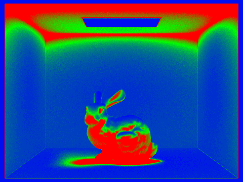 |
|
|
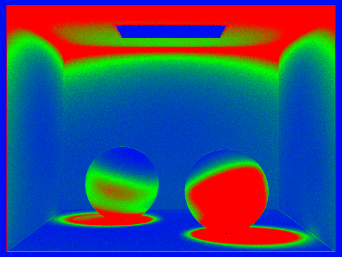 |
The sample rate images show the idea working. The walls that face the light directly are mostly blue, because their brightness is stable and they converge fast. The ceiling, the soft shadows on the floor, and the darker sides of the objects are red, since their light mostly comes from random indirect bounces and needs many more samples to settle. The light source and the black background converge almost right away.
Not attempted.